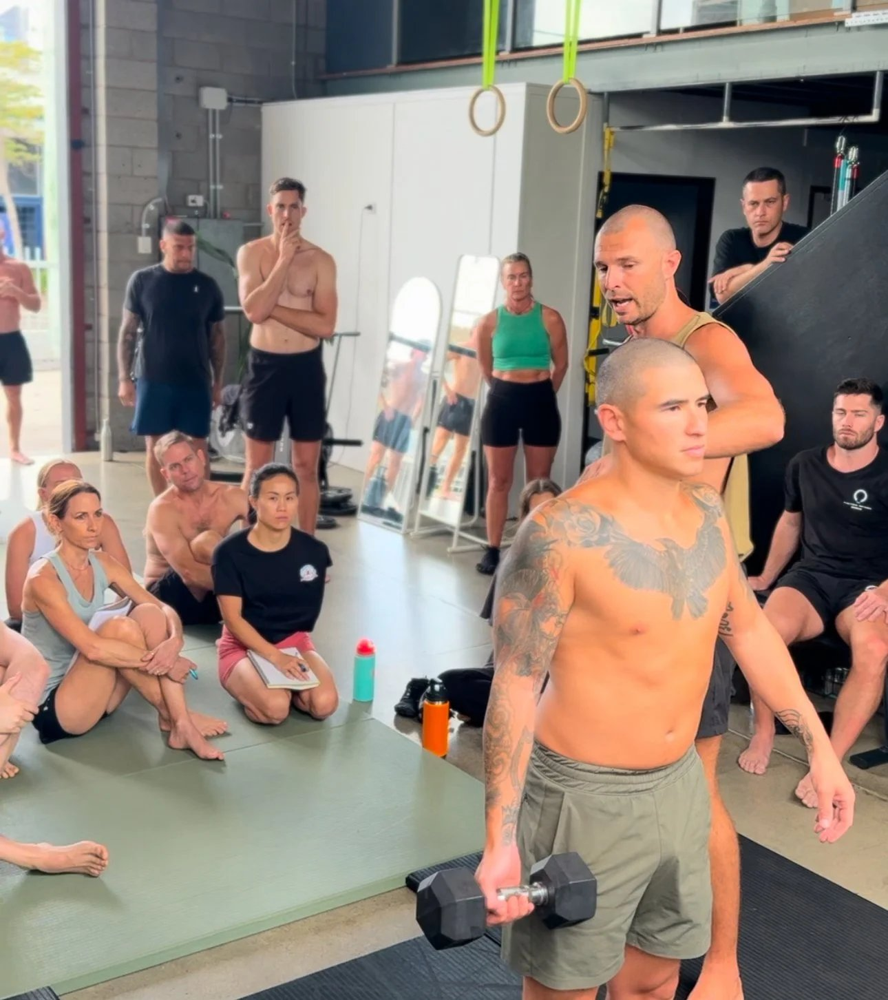
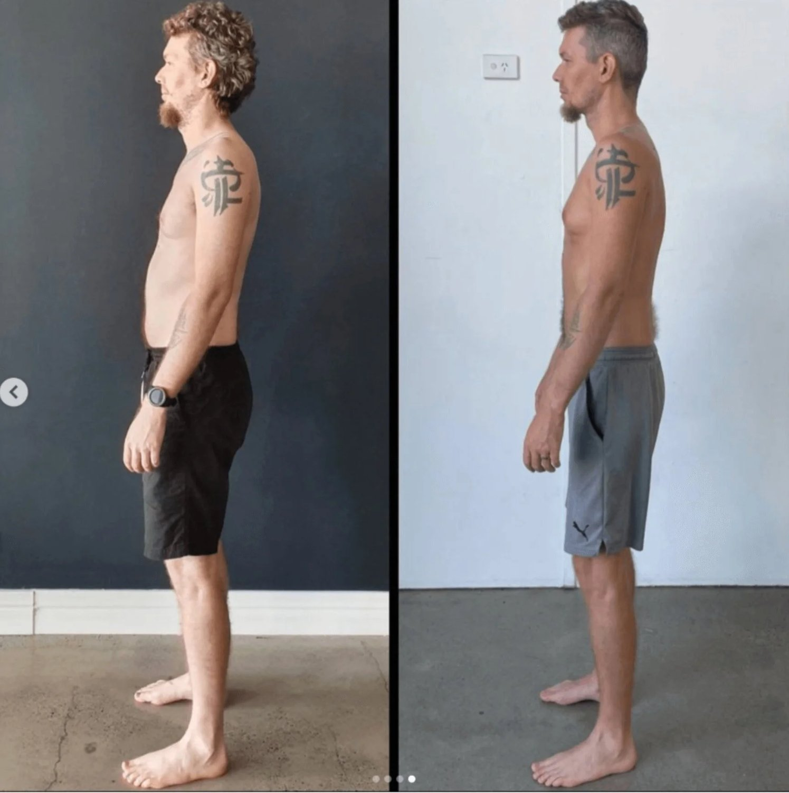
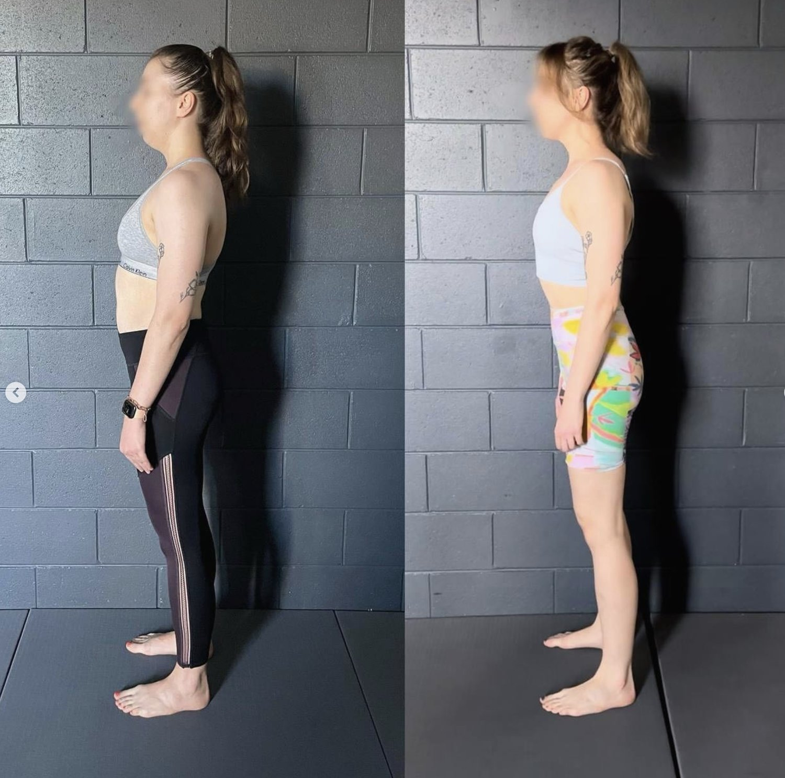

Poor posture isn’t just about slouching; it has far-reaching effects on your physical and mental health. Improper posture disrupts the balance of your postural muscles, leading to chronic pain, stiffness, and other health problems. But with the right approach, such as Functional Patterns, you can transform your posture and your overall well-being.
In this blog, we’ll uncover the body posture meaning, explore the negative effects of back slouching in the future, and show you how Functional Patterns offers an innovative way to address incorrect posture at its root.
What Is Poor Posture, and Why Does It Matter?
To understand the types of posture—both good and bad—it’s essential to know that posture is more than just "sitting up straight." Your posture reflects how your body aligns and functions during movement and rest.
When alignment is off, the bad posture symptoms can accumulate over time, resulting in serious health problems such as:
-
Neck Pain and Stiffness: Slouching places strain on the cervical spine, which can lead to aches and pains in the neck and shoulders.
-
Poor Posture Symptoms in the Back: Weak postural muscles cause the spine to lose its natural curves, increasing stress on the lower back.
-
Muscle Tension and Imbalances: Chronic muscle tension develops when your body compensates for incorrect posture during daily activities.
-
Reduced Energy and Mood Issues: A slumped posture affects your breathing, which in turn impacts your energy and emotional state.

Functional Patterns: Transforming Poor Posture into Good Posture
Correcting poor posture means going beyond superficial fixes and addressing the root cause. That’s where Functional Patterns stands out. Instead of telling you to sit up straight or “stop slouching,” FP works to restore the body's natural curves and movement dynamics.
How Functional Patterns Redefines Posture Correction
FP applies the principles of biomechanics to retrain how your body moves. By focusing on the types of good posture that emerge naturally when the body functions optimally, FP ensures that the improvements are both sustainable and effective.
-
Targeting Postural Muscles: FP trains the deep muscles responsible for supporting your posture, helping you maintain alignment whether you’re sitting, standing, or walking.
-
Rebalancing the Body: It addresses muscle imbalances caused by modern sedentary lifestyles, which often lead to pain and stiffness.
-
Integrating Movement: FP ensures your movements are aligned with your body's design, improving your posture while enhancing your overall mobility.

How Poor Posture Affects Your Health and Performance
1. Chronic Back Problems
One of the most common bad posture side effects is back pain. A slumped posture puts undue pressure on your lumbar spine, leading to issues like herniated discs and reduced mobility. Over time, the negative effects of back slouching in the future can include degenerative conditions and persistent discomfort.
Functional Patterns Solution: FP focuses on restoring the spine’s natural curves through dynamic exercises that improve mobility and reduce compression.
2. Disrupted Core Stability
Without strong abdominal muscles and a functional core, your body can’t effectively support itself, leading to excessive stress on your back and neck. This lack of stability often results in aches and pains during prolonged periods of sitting or standing.
Example:
When your core is inactive, you can’t maintain good posture, and your spine collapses under its weight, creating posture problems.
Functional Patterns Solution: By strengthening the core through integrated movements, FP helps you stand up straight and maintain proper alignment in all positions.
3. Limited Range of Motion
Poor posture reduces your body’s range of motion, making even simple movements uncomfortable. This is especially common when the thoracic spine becomes stiff, leading to compensatory patterns in the shoulders and hips.
Functional Patterns Solution: Exercises that encourage spinal rotation and thoracic mobility help restore fluid movement and improve your ability to stand up straight without discomfort.
4. Emotional and Psychological Effects
Beyond physical symptoms, bad posture symptoms include reduced confidence and increased stress. Slouching limits your breathing, which can affect your energy levels and emotional state.
Functional Patterns Solution: By focusing on diaphragmatic breathing and core stability, FP not only improves your physical posture but also enhances your mood and energy.

Practical Tips for Better Posture
-
Understand the Types of Posture: Recognize the difference between a slumped posture and proper alignment, which includes balanced shoulders, a neutral pelvis, and engaged postural muscles. True posture isn’t static—it evolves as you move, requiring thoughtful assessment of how your body behaves in dynamic situations.
-
Reassess Core Engagement: Rather than simply "strengthening your core" or isolating your abdominal muscles, Functional Patterns emphasises integrating core stability into full-body movement. This ensures that your core supports functional and symmetrical movement patterns, improving overall posture.
-
Move Functionally, Not Just More: While breaking sedentary habits is essential, FP takes this further by promoting deliberate, symmetrical, and functional movement patterns. Instead of random movement breaks, focus on exercises designed to correct posture problems and reestablish the natural curves of your spine.
-
Practice FP-Specific Movements: Movements like standing thoracic rotations or resisted gait mechanics, tailored to your body's asymmetries, are foundational to FP. These exercises improve your ability to maintain good alignment in motion, addressing the root cause of poor posture symptoms rather than just managing them.
-
Seek Functional Patterns Expertise: For a personalized approach, work with an FP practitioner who will assess your individual imbalances and design a program to transform how your body moves. By addressing muscle imbalances, improving your range of motion, and realigning your body, they’ll guide you to sustainable improvements in both posture and overall function.

Conclusion
Poor posture isn’t just about how you look; it’s about how your body functions. From bad posture back problems to reduced energy and confidence, the effects of slouching can permeate every aspect of your life. But by addressing the root causes through Functional Patterns, you can achieve lasting changes that go beyond superficial fixes.
Functional Patterns doesn’t just help you sit up straight or improve your posture; it realigns your body to move the way it was designed to. By doing so, it eliminates negative effects of back slouching in the future and empowers you to move, breathe, and live better.